이미지를 누르면 크게 볼 수 있어요 (←/→ 이동, ESC 닫기). 고르신 안을 알려주시면 게임에 넣을게요.
화면을 가리지 않게 작게 넣었어요. 같은 장면(벚꽃 바람)으로 비교해 보세요.
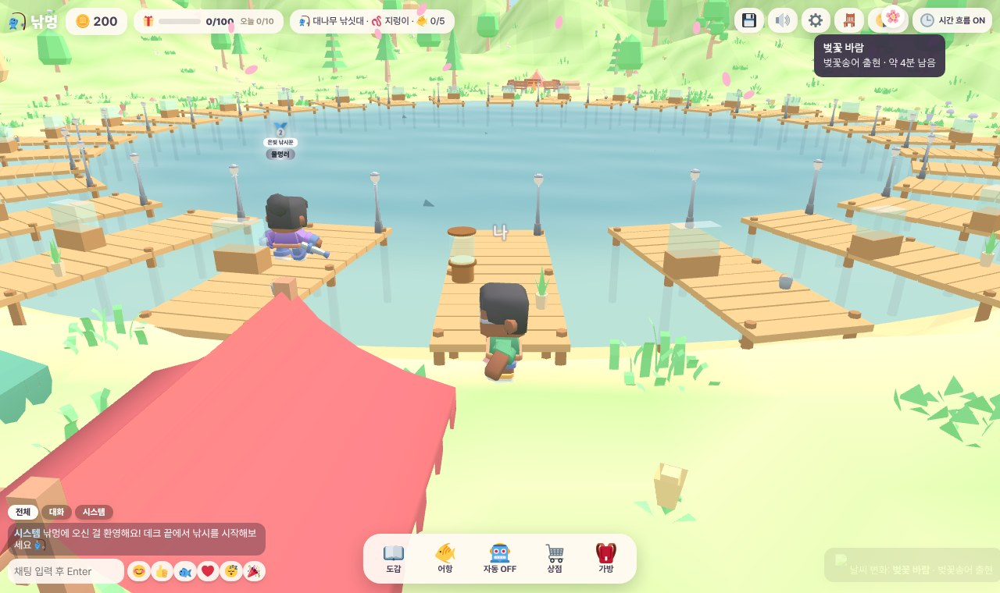
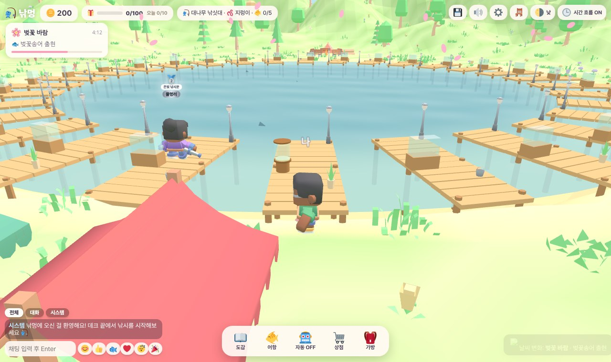
톡시도 관리 콘솔(왼쪽 메뉴, 통계 카드, 넉넉한 여백) 구성을 참고했어요.
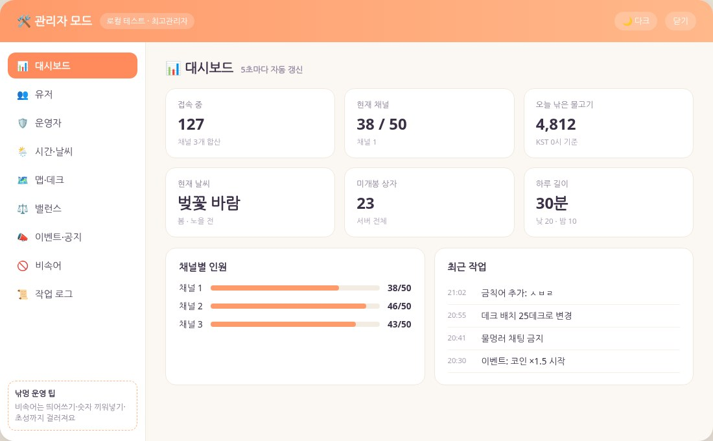
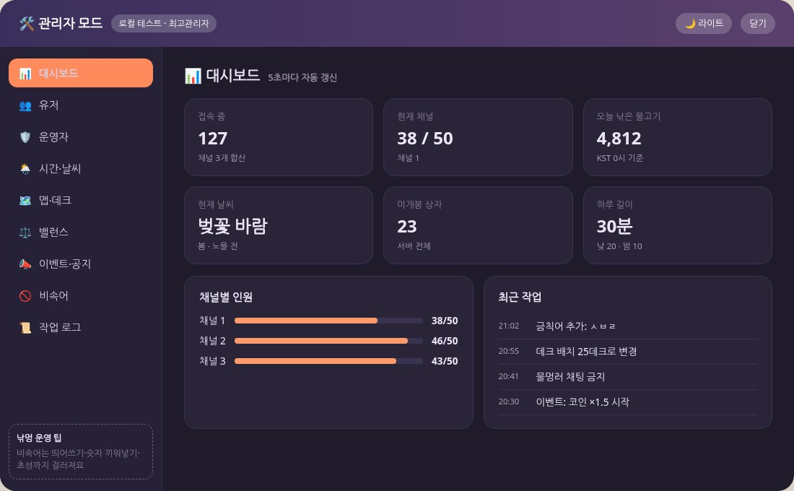
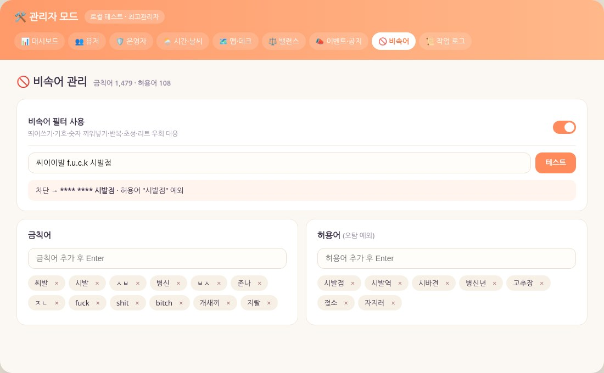
항목마다 제목과 설명을 두 줄로 나누고, 켜고 끄는 건 스위치로 바꿨어요.
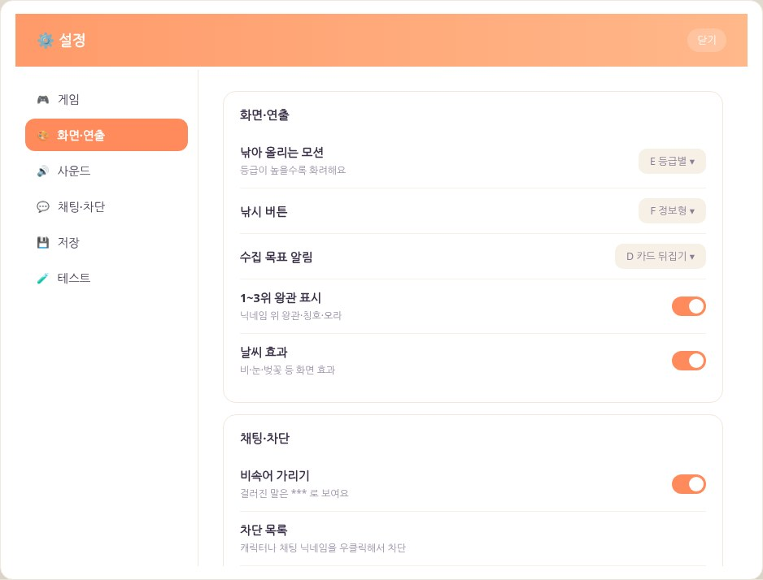
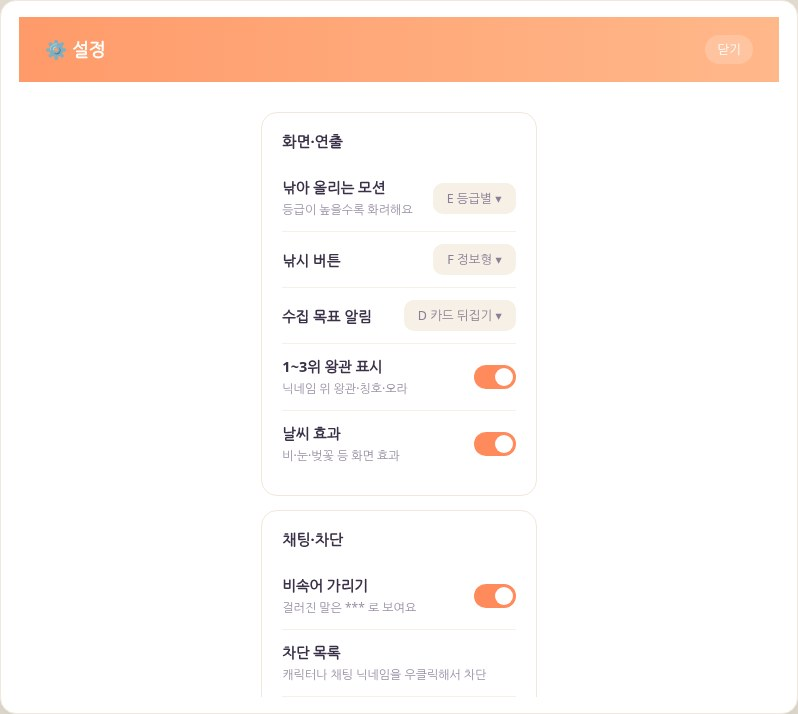
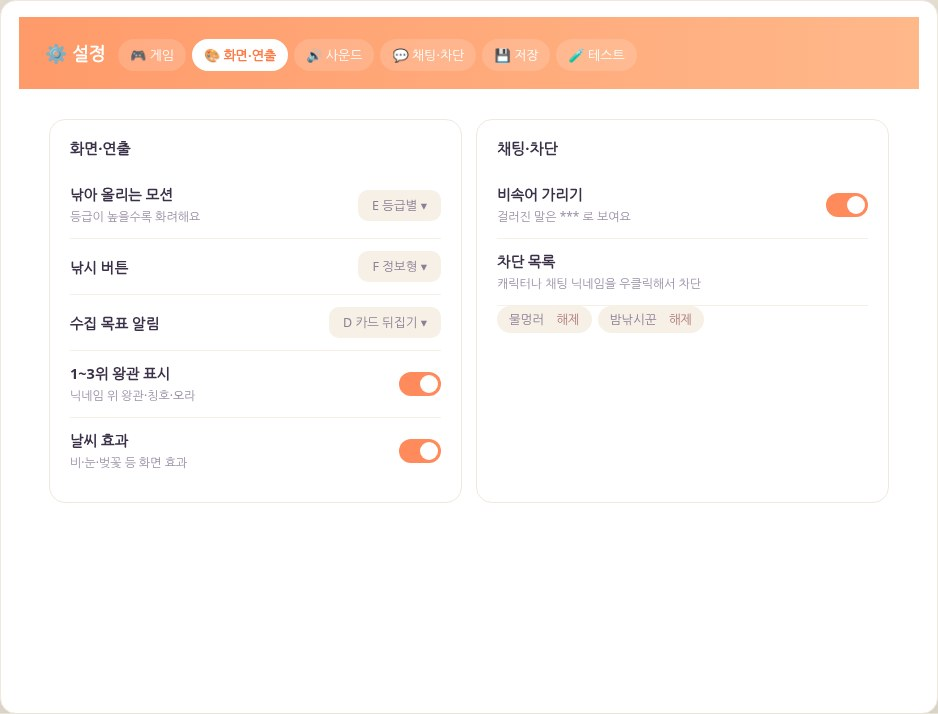
실제 빙어처럼 가늘고 길게, 반투명한 은빛 몸통과 등의 어두운 줄을 살렸어요.
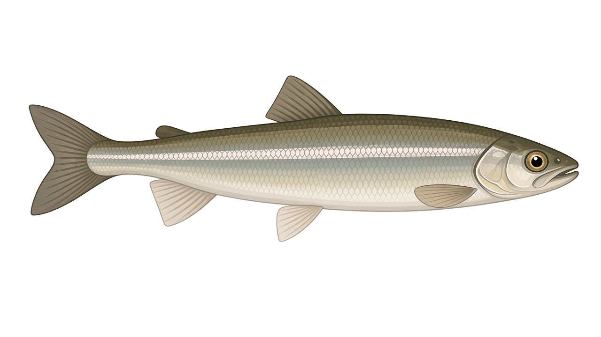
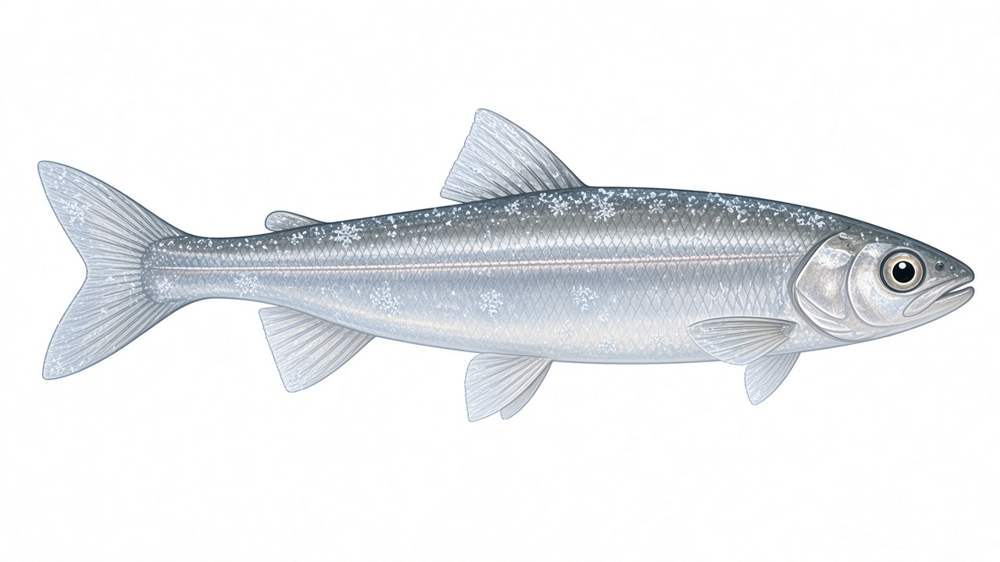
필터가 아니라 실제 게임 장면에 산과 지형 모델을 새로 넣고 찍었어요.
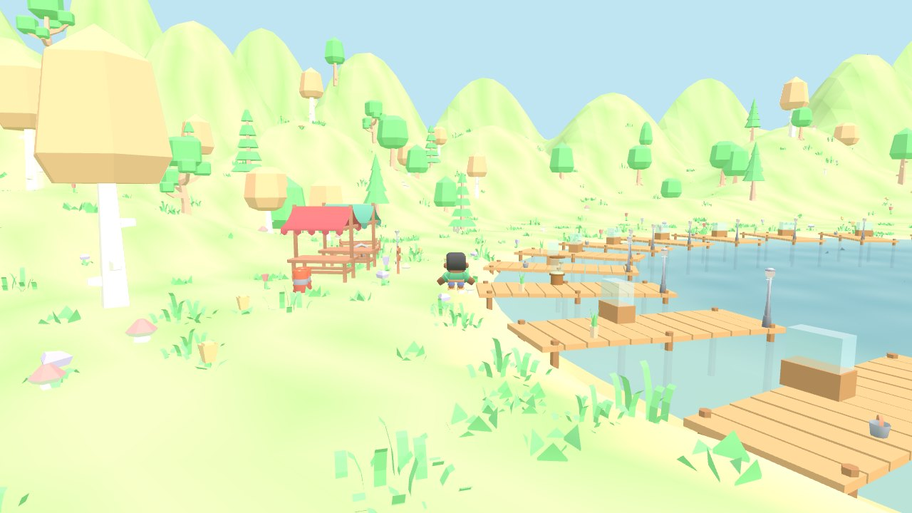
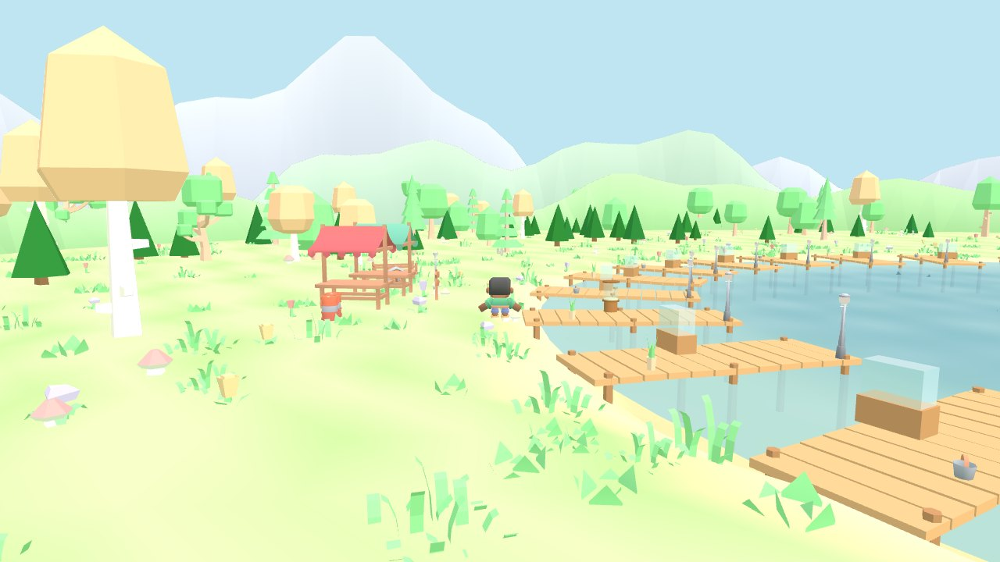
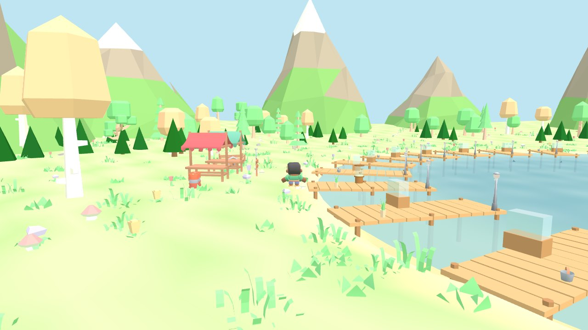
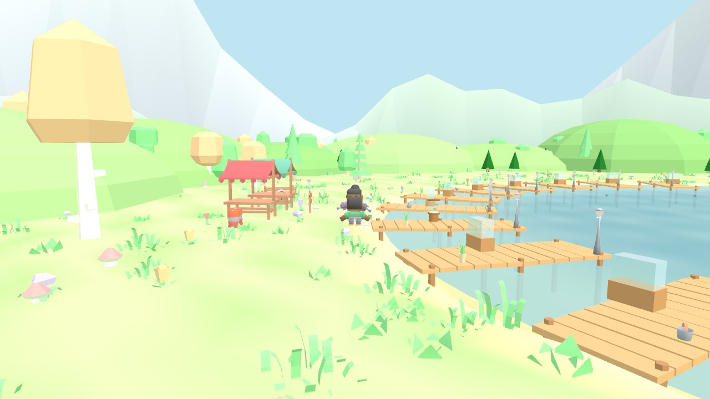
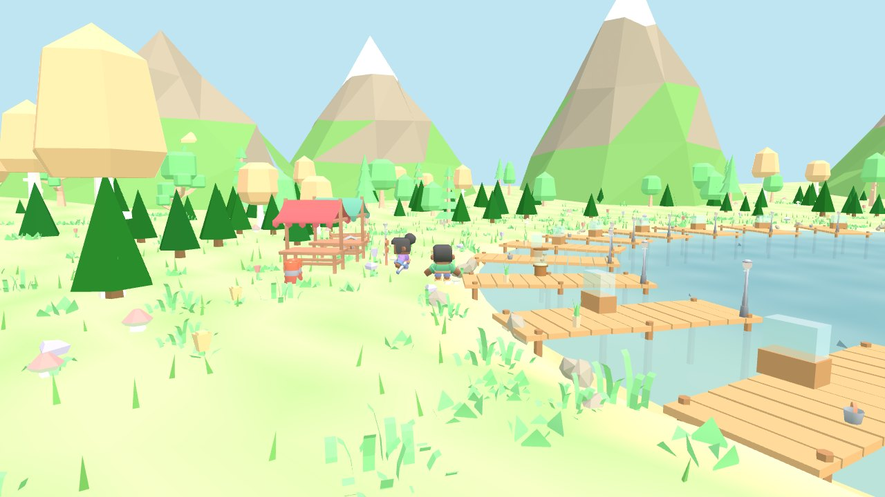
지금 게임에 쓰는 캐릭터 모델을 그대로 쓰고 옷 색과 모자만 바꿨어요. 왼쪽 두 명이 현행 캐릭터예요.
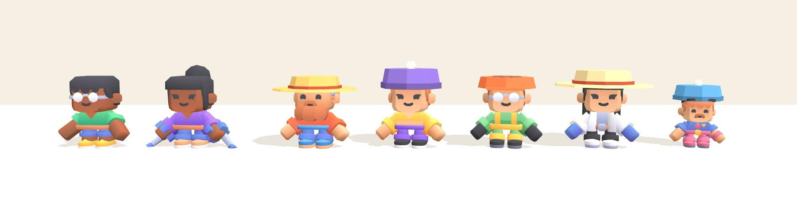